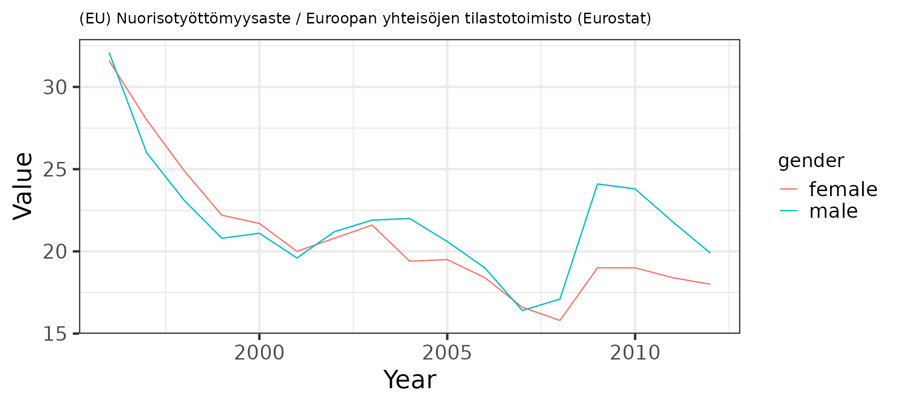
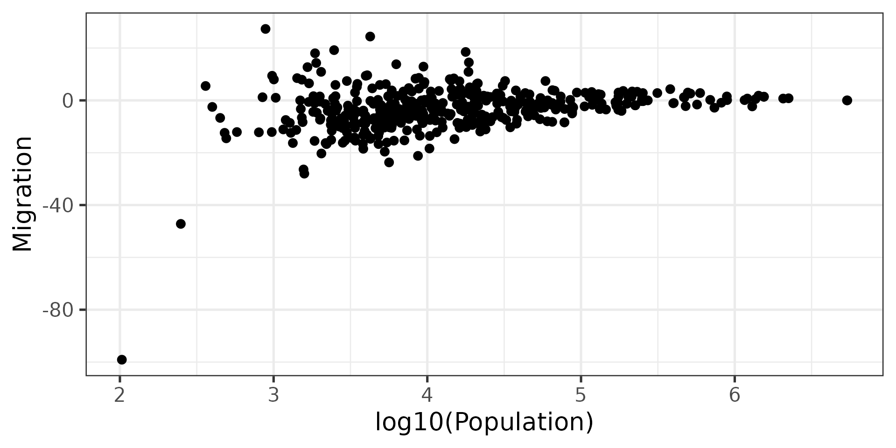

This is the sotkanet R package to access data from the Sotkanet portal that provides over 2000 demographic indicators across Finland and Europe, maintained by the National Institute for Health and Welfare (THL). For more information, see Information about Sotkanet and API description. This package is part of rOpenGov.
Release version
install.packages("sotkanet")Development version (for the adventurous ones)
library(devtools)
install_github("ropengov/sotkanet")Load sotkanet and other libraries used in this vignette
List available Sotkanet indicators:
sotkanet.indicators <- SotkanetIndicators(type = "table")
# kable(head(sotkanet.indicators))List geographical regions with available indicators:
options(width = 60)
sotkanet.regions <- SotkanetRegions(type = "table")
kable(head(sotkanet.regions))| region | region.title.fi | region.code | region.category | region.uri |
|---|---|---|---|---|
| 833 | Etelä-Suomen AVIn alue | 1 | ALUEHALLINTOVIRASTO | http://www.yso.fi/onto/kunnat/ahv1 |
| 834 | Lounais-Suomen AVIn alue | 2 | ALUEHALLINTOVIRASTO | http://www.yso.fi/onto/kunnat/ahv2 |
| 835 | Itä-Suomen AVIn alue | 3 | ALUEHALLINTOVIRASTO | http://www.yso.fi/onto/kunnat/ahv3 |
| 836 | Länsi- ja Sisä-Suomen AVIn alue | 4 | ALUEHALLINTOVIRASTO | http://www.yso.fi/onto/kunnat/ahv4 |
| 837 | Pohjois-Suomen AVIn alue | 5 | ALUEHALLINTOVIRASTO | http://www.yso.fi/onto/kunnat/ahv5 |
| 838 | Lapin AVIn alue | 6 | ALUEHALLINTOVIRASTO | http://www.yso.fi/onto/kunnat/ahv6 |
Get the indicator no. 10013 (Unemployment rate of young people aged 16-24 years) from Sotkanet free-text search from Finland (Suomi) for 1990-2012 (Eurostat employment statistics youth unemployment), and plot a graph:
# Get indicator data
dat <- GetDataSotkanet(indicators = 10013, years = 1990:2012,
genders = c('female', 'male', 'total'),
region.category = "EUROOPPA", regions = "Suomi")
# Investigate the first lines in the data
kable(head(dat)) %>%
kable_styling() %>%
kableExtra::scroll_box(width = "100%")| region | region.title.fi | region.code | region.category | indicator | indicator.title.fi | year | gender | primary.value | absolute.value | indicator.organization.title.fi | |
|---|---|---|---|---|---|---|---|---|---|---|---|
| 10013.727 | 1022 | Suomi | 246 | EUROOPPA | 10013 | (EU) Nuorisotyöttömyysaste | 2008 | male | 17.1 | NA | Euroopan yhteisöjen tilastotoimisto (Eurostat) |
| 10013.728 | 1022 | Suomi | 246 | EUROOPPA | 10013 | (EU) Nuorisotyöttömyysaste | 2004 | female | 19.4 | NA | Euroopan yhteisöjen tilastotoimisto (Eurostat) |
| 10013.729 | 1022 | Suomi | 246 | EUROOPPA | 10013 | (EU) Nuorisotyöttömyysaste | 1996 | female | 31.6 | NA | Euroopan yhteisöjen tilastotoimisto (Eurostat) |
| 10013.730 | 1022 | Suomi | 246 | EUROOPPA | 10013 | (EU) Nuorisotyöttömyysaste | 1999 | male | 20.8 | NA | Euroopan yhteisöjen tilastotoimisto (Eurostat) |
| 10013.731 | 1022 | Suomi | 246 | EUROOPPA | 10013 | (EU) Nuorisotyöttömyysaste | 2011 | female | 18.4 | NA | Euroopan yhteisöjen tilastotoimisto (Eurostat) |
| 10013.732 | 1022 | Suomi | 246 | EUROOPPA | 10013 | (EU) Nuorisotyöttömyysaste | 1997 | female | 28.0 | NA | Euroopan yhteisöjen tilastotoimisto (Eurostat) |
This takes for a long time and is not recommended for regular use. Save the data on your local disk for further work.
# These indicators have problems with R routines:
probematic.indicators <- c(1575, 1743, 1826, 1861, 1882, 1924, 1952, 2000, 2001, 2033, 2050, 3386, 3443)
# Get data for all indicators
datlist <- list()
for (ind in setdiff(sotkanet.indicators$indicator, probematic.indicators)) {
datlist[[as.character(ind)]] <- GetDataSotkanet(indicators = ind,
years = 1990:2013, genders = c('female', 'male', 'total'))
}
# Combine tables (this may require considerable time and memory
# for the full data set)
dat <- do.call("rbind", datlist)Download and visualize time series:
# Pick indicator name
indicator.name <- as.character(unique(dat$indicator.title.fi))
indicator.source <- as.character(unique(dat$indicator.organization.title.fi))
# Visualize
library(ggplot2)
theme_set(theme_bw(20));
p <- ggplot(dat, aes(x = year, y = primary.value, group = gender, color = gender))
p <- p + geom_line() + ggtitle(paste(indicator.name, indicator.source, sep = " / "))
p <- p + xlab("Year") + ylab("Value")
p <- p + theme(title = element_text(size = 10))
p <- p + theme(axis.title.x = element_text(size = 20))
p <- p + theme(axis.title.y = element_text(size = 20))
p <- p + theme(legend.title = element_text(size = 15))
print(p)
Investigate the effect of municipality size on demographic variation. Smaller municipalities show more random variation as expected by statistical arguments:
selected.inds <- c(127, 178)
dat <- GetDataSotkanet(indicators = selected.inds,
years = 2011, genders = c('total'))
# Pick necessary fields and remove duplicates
datf <- dat[, c("region.title.fi", "indicator.title.fi", "primary.value")]
datf <- datf[!duplicated(datf),]
dw <- reshape(datf, idvar = "region.title.fi",
timevar = "indicator.title.fi", direction = "wide")
names(dw) <- c("Municipality", "Population", "Migration")
p <- ggplot(dw, aes(x = log10(Population), y = Migration)) +
geom_point(size = 3)
ggtitle("Migration vs. population size")
#> $title
#> [1] "Migration vs. population size"
#>
#> attr(,"class")
#> [1] "labels"
theme(title = element_text(size = 15))
#> List of 1
#> $ title:List of 11
#> ..$ family : NULL
#> ..$ face : NULL
#> ..$ colour : NULL
#> ..$ size : num 15
#> ..$ hjust : NULL
#> ..$ vjust : NULL
#> ..$ angle : NULL
#> ..$ lineheight : NULL
#> ..$ margin : NULL
#> ..$ debug : NULL
#> ..$ inherit.blank: logi FALSE
#> ..- attr(*, "class")= chr [1:2] "element_text" "element"
#> - attr(*, "class")= chr [1:2] "theme" "gg"
#> - attr(*, "complete")= logi FALSE
#> - attr(*, "validate")= logi TRUE
theme(axis.title.x = element_text(size = 20))
#> List of 1
#> $ axis.title.x:List of 11
#> ..$ family : NULL
#> ..$ face : NULL
#> ..$ colour : NULL
#> ..$ size : num 20
#> ..$ hjust : NULL
#> ..$ vjust : NULL
#> ..$ angle : NULL
#> ..$ lineheight : NULL
#> ..$ margin : NULL
#> ..$ debug : NULL
#> ..$ inherit.blank: logi FALSE
#> ..- attr(*, "class")= chr [1:2] "element_text" "element"
#> - attr(*, "class")= chr [1:2] "theme" "gg"
#> - attr(*, "complete")= logi FALSE
#> - attr(*, "validate")= logi TRUE
theme(axis.title.y = element_text(size = 20))
#> List of 1
#> $ axis.title.y:List of 11
#> ..$ family : NULL
#> ..$ face : NULL
#> ..$ colour : NULL
#> ..$ size : num 20
#> ..$ hjust : NULL
#> ..$ vjust : NULL
#> ..$ angle : NULL
#> ..$ lineheight : NULL
#> ..$ margin : NULL
#> ..$ debug : NULL
#> ..$ inherit.blank: logi FALSE
#> ..- attr(*, "class")= chr [1:2] "element_text" "element"
#> - attr(*, "class")= chr [1:2] "theme" "gg"
#> - attr(*, "complete")= logi FALSE
#> - attr(*, "validate")= logi TRUE
theme(legend.title = element_text(size = 15))
#> List of 1
#> $ legend.title:List of 11
#> ..$ family : NULL
#> ..$ face : NULL
#> ..$ colour : NULL
#> ..$ size : num 15
#> ..$ hjust : NULL
#> ..$ vjust : NULL
#> ..$ angle : NULL
#> ..$ lineheight : NULL
#> ..$ margin : NULL
#> ..$ debug : NULL
#> ..$ inherit.blank: logi FALSE
#> ..- attr(*, "class")= chr [1:2] "element_text" "element"
#> - attr(*, "class")= chr [1:2] "theme" "gg"
#> - attr(*, "complete")= logi FALSE
#> - attr(*, "validate")= logi TRUE
print(p)
For further usage examples, see rOpenGov-blog, and takomo, and Helsinki Region Infoshare-blog
Cite SOTKAnet and link to https://sotkanet.fi/sotkanet/fi/index. Also mention indicator provider.
Central points:
This work can be freely used, modified and distributed under the Two-clause BSD license.
citation("sotkanet")
#>
#> Kindly cite the sotkanet R package as follows:
#>
#> (C) Leo Lahti, Einari Happonen, Juuso Parkkinen and
#> Joona Lehtomaki 2013-2015. sotkanet: Sotkanet R
#> Tools
#>
#> A BibTeX entry for LaTeX users is
#>
#> @Misc{,
#> title = {sotkanet R package},
#> author = {Leo Lahti and Einari Happonen and Juuso Parkkinen and Joona Lehtomaki},
#> year = {2013},
#> }
#>
#> For more info, see:
#> https://github.com/ropengov/sotkanet/